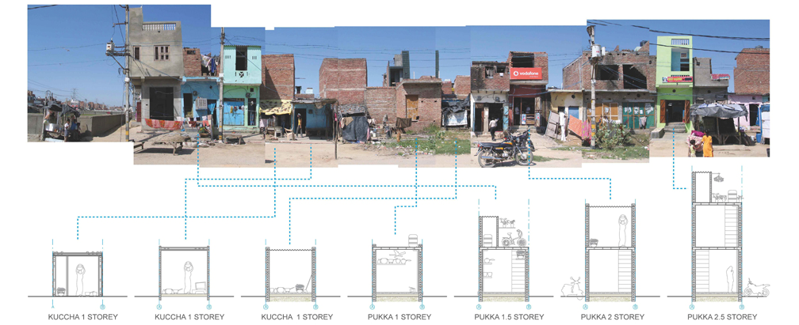

Introduction
Quantifying Evolving Risk and Identifying Effective Policy Actions for a Resilient Future
Disaster risk is dynamic. It is affected by spatial and temporal changes in its underlying components: hazard, exposure, and vulnerability. Disaster risk may increase or decrease in response to natural and anthropogenic influences, and often evolves disproportionately in different locations, economic sectors, and population groups.
Hazard refers to the likelihood and intensity of a potentially destructive natural phenomenon, such as ground shaking induced by an earthquake or wind speed associated with a cyclone. Climate change and climate variability contribute to the evolution of hazard by altering the frequency, intensity, seasonality, and geographic coverage of these phenomena.
Exposure refers to the location, attributes, and value of important community assets that are exposed to the hazard, such as people, buildings, agricultural land, and infrastructure. Population growth, urbanization, and socioeconomic development drive the evolution of exposure, and have been the primary driver of disaster losses in recent decades.
Vulnerability is the potential extent to which physical, social, economic, and environmental assets may become damaged or disrupted when exposed to a hazard event. Physical vulnerability refers to the level of damage sustained by built structures due to the physical load imparted by a hazard event. Socioeconomic or social vulnerability refers to factors such as livelihood, social connections, and gender, which influence a community’s ability to respond to, cope with, and recover from a disaster. Vulnerability can affect the number of casualties, the loss or disruption sustained, and the community’s subsequent recovery time. Socioeconomic development, unplanned urban development, unsafe building practices, the occurrence of disasters themselves, and the efficacy of post-disaster recovery all affect vulnerability.
“Risk assessments need to account for temporal and spatial changes in hazard, exposure, and vulnerability, particularly in rapidly urbanizing areas or where climate change impacts will be felt the most. A risk assessment that provides an estimation of evolving or future risk is a way to engage stakeholders in carrying out actions now in order to avoid or mitigate the risk that is accumulating in their city or country. For example, risk analysis offers an opportunity to quantify the decrease in future risk that arises from better enforcement of building codes, and hence to demonstrate the benefit of spending additional funds on building code enforcement” (216).1
Urban development, investments in infrastructure, and disaster risk management (DRM) act over multi-decadal time scales and are likely to be affected by the future evolution of disaster risk. It is therefore important that decisions made about such long-term activities and processes take the dynamic nature of disaster risk into account.
Disaster risk assessment quantifies the effects of disasters in terms of potential casualties, physical damage to assets, economic losses, and fiscal loss to governments. This quantification informs risk management, disaster preparedness, financial protection, and resilient reconstruction. To promote the utility of DRM programs and to assess the impacts (costs and benefits) of current decisions on future risk, disaster risk assessments must be able to quantify evolving risk both with and without the effects of DRM policies. Quantifying evolving risk under different DRM policies allows risk management specialists to demonstrate how actions taken now and in the near future could affect the risk environment of the mid- to long-term future. This report identifies and describes the drivers of evolving disaster risk and highlights key policies to promote risk reduction and to prevent an increase in risk.
Drivers of Evolving Disaster Risk: Hazard
Climate change is a significant driver of evolving hazard and a major factor in increasing disaster risk. It has been clearly linked to changes in the characteristics of disasters.2 Research into the mechanisms and risks of changing climate shows that disaster risk has already been influenced by climate change. Other influences on changes in hazard, and hence on disaster risk, include human actions such as extraction of groundwater and certain kinds of land use.
“A changing climate leads to changes in the frequency, intensity, spatial extent, duration and timing of extreme weather and climate events, and can result in unprecedented extremes” (111).2
Climate influences on wind hazards

Global temperature increase (Figure 1) is expected to influence the frequency, severity, and seasonal patterns of precipitation and monsoon events, resulting in regional changes in flood and drought hazard. The intensity and frequency of the most extreme tropical cyclones have increased in the North Atlantic since 1980 3, and spatial shifts in cyclone tracks have resulted in increased landfall intensity of cyclones in East Asia. 4
There has been no clear upward trend in extratropical cyclone (ETC) activity in the North Atlantic basin, 5 but there have been increases in such activity in the South Atlantic–Indian Ocean basin and decreases in the South Pacific. 6 In future, the tracks of Southern Hemisphere and North Pacific extratropical cyclones are expected to shift toward the poles, 7, 8 and there is likely to be an increase in associated precipitation. 9
Climate influences on flooding
Sea-level rise is associated with ice sheet melt, thermal expansion of ocean waters, and change in liquid water storage on land. Between 1901 and 2010, the global average mean sea level rose by an estimated 0.19 m, 8 and it is likely to rise by 0.26–0.55 m by 2100 relative to 1986–2005—even if climate policies are effective in reducing greenhouse gas emissions from 2020 onward. 8
Very few coastlines around the world will avoid the effects of sea-level rise, which will result in more frequent and severe coastal flooding, including storm surge associated with cyclones. Where land elevation is decreasing due to subsidence and shorelines are simultaneously retreating due to coastal erosion, the coastal flood hazard is increasing dramatically. Given the global increase in hazard and the location of significant populations and assets along coasts, it is crucial that DRM and climate adaptation strategies address the factors driving evolution of the coastal flood hazard.
Exposure is often concentrated along rivers. In some locations repeated flooding causes severe disruption—not only to the urban environment but also to agriculture and rural livelihoods (Figure 2). Intensification of and seasonal shifts in rainfall, snow melt, and deglaciation of mountain ranges 11 alter the timing, severity, and geographical distribution of extreme river flood events in all regions of the world. There is no clear signal of climate change in the increasing losses observed over the past several decades; 12, 13 these are primarily driven by exposure change. Future changes in flood hazard—specifically flood frequency and intensity—are expected, however. 2 Another important consideration in this context is the interannual climatic variability associated with El Niño and La Niña, which influence flooding in river basins covering almost half of the earth’s surface. 14
Anthropogenic change in flood hazard
Flooding is significantly affected by anthropogenic activity. As deforestation increases and urban drainage systems and impermeable surfaces expand, there is an increase in the amount of surface runoff occurring during precipitation, and a decrease in the amount of time it takes for precipitation to reach river channels; the result is more-extreme flood peaks. Subsidence can increase flood hazard by reducing ground elevation. Though it may occur naturally (due to earthquakes or the settlement of sediment under its own weight), it is often the result of human actions such as the extraction of groundwater from underground aquifers for irrigation or water supply. Groundwater extraction occurs most intensively in urban areas, and its rate and spatial extent increase as urban populations grow and urban areas expand. The rate of subsidence can exceed that of sea-level rise, meaning that subsidence may be a greater influence on the increased coastal flood hazard than climate change impacts. 16
“In most of the large delta cities where subsidence is severe (Jakarta, Ho Chi Minh City, Bangkok, Dhaka, Shanghai, and Tokyo), the main cause is extraction of groundwater. Rapidly expanding urban areas require huge amounts of water for domestic and industrial water supply. This need often leads to overexploitation of groundwater resources, especially when surface waters are seriously polluted (Jakarta, Dhaka).” 16
In Manila Bay, Philippines, extraction has contributed to increased flood risk by lowering the land by several centimeters each year—in some years by more than 10 cm. 17 In Jakarta, Indonesia, 2 m of subsidence is estimated to have occurred between 1999 and 2013, with an additional 1.8 m expected between 2013 and 2025. 16 At current rates of subsidence and sea-level rise, and without coastal protection, residential and industrial areas of north Jakarta, major transport links (including the international airport), and ports could be submerged within 100 years. 18
Coastal erosion can cause evolution in coastal flood hazard by reducing the buffer zone that separates coastal populations and assets from coastal hazards (such as flooding, storm surge, and tsunami). Erosion is a global issue, occurring from the coasts of Yorkshire, England, 19 to small island states such as Maldives. 20 Naturally occurring erosion may be exacerbated by sea-level rise or by more frequent storm surge events. Sediment transport deficit can also cause or contribute to erosion; it occurs when the construction of river dams or other coastal works prevents natural sediment refill. The development of a coastal highway in Alexandria, Egypt, for example, has reduced the amount of sediment reaching coastal areas, contributing to “chronic long-term coastal erosion” of c. 20 cm per year. 21
Changing precipitation’s effect on slope instability
Heavy rainfall and flooding contribute to slope instability by increasing soil water pressure and undercutting slopes or cliffs. Intensification of and seasonal shifts in rainfall thus lead to evolution in landslide hazard. The Intergovernmental Panel on Climate Change (IPCC) expresses high confidence that climate change–driven changes in heavy precipitation will give rise to changes in slope instability and mass movement. 2 According to an analysis of fatal landslides in Southeast Asia, the upward global trend in the number of reported landslide fatalities is strongly attributed to increased population on landslide-prone land, destabilization of slopes, and deforestation. 22 Landslides are sensitive to high-intensity precipitation events related to high temperatures, 23 and monsoon intensity and the number of tropical cyclones making landfall influence the number of fatal landslides. 22
An uncertain future drought hazard
There are distinct regional variations in the projected direction of change in drought, and in the magnitude of factors contributing to drought (i.e., precipitation, runoff, soil moisture, and evapotranspiration). Whereas some studies have found signals of increases in drought occurrence under climate change, 24, 25 such trends are not considered significant on a global scale. 26
meteorological drought (i.e., a relative deficit of precipitation);agricultural or soil moisture drought (i.e., a relative deficit of soil moisture in the root zone);hydrological drought (i.e., a relative deficit of groundwater, streamflow, or lake levels); 2 orwater scarcity or socioeconomic drought (i.e. a deficit in water availability relative to the water consumption by households, agriculture and industry) 25
On a global scale, the estimated share of the world population facing
Projected warming by several degrees is likely to reduce precipitation in the Mediterranean, southwest United States, and southern Africa, and decrease runoff and soil moisture in southern Europe and the Middle East. In these already water-scarce regions, 8 warming is likely to exacerbate water scarcity. The IPCC has high confidence that heat and drought stress will result in reduced crop productivity, increased pest and disease damage, and flood impacts on food system infrastructure, which will in turn harm livelihoods and food security.
Extreme heat and wildfire
Rising temperatures are expected to result in greater severity, frequency, and extent of extreme heat events—both “highly unusual” events (such as those in Russia and Central Asia in 2010 and the United States in 2012) and “unprecedented” events (which have not occurred under present-day climate conditions). 28 Such heat events are a primary driver of climate-related human migration 29 and are a cause of human health problems. Figure 3 indicates the regional scale of high temperatures through a snapshot of one month—July 2012—in which temperatures were higher than the long-term average. These July temperatures contributed to an historically severe drought in 2012: in that year, severe-to-extreme drought affected 39 percent of the United States—the largest extent since the 1950s. 30

The expected increase in number of hot days over a larger area of North America 32 increases the spatial extent of heat-related mortality, wildfire risk, and drought-affected regions. Large wildfires’ frequency and severity (in terms of area burned) are expected to increase in a warmer climate, 33 in which hotter and drier conditions, an increase in fuel, and more frequent lightning will lead to longer fire seasons. Climate change is expected to have a minor impact on wildfire risk in North America and South America, but a major impact in southern Europe and East Africa. 34 The impacts of escalating wildfires are substantial in many regions of the world, and include lives and homes lost, substantial costs of suppression, and large damages to ecosystem services. There have been several high-profile wildfires in the last several years, 35 including devastating wildfires in southern Europe during a summer of record temperatures (2007); the worst Australian bushfires on record in the state of Victoria during a heat wave of record temperatures (2009); 500 wildfires around Moscow, Russia, during the hottest summer for 400 years (figure 4), resulting in a 25 percent crop failure, 55,00 deaths, and economic losses of US$15 billion (2010); and 3 million acres of burnt land in four southern US states during a record heat wave and drought, resulting in US$6–8 billion of economic loss (2011).

Drivers of Evolving Disaster Risk: Exposure
The rise in disaster losses over the past decades has been mainly attributed to changes in socio-economic factors – population, asset values of structures, and of infrastructure. The effect of exposure on increasing disaster losses is strong, and has been established with much more confidence than the effect of hazard and vulnerability (Visser et al., 2014).
‘Increasing exposure of people and economic assets has been the major cause of long-term increases in economic losses from weather- and climate-related disasters (high confidence).’ IPCC (2012, p.9)
Increases in global exposure to natural hazards have largely been driven by population growth and rising urbanization rates. The global population exposed to river and coastal flooding, for example, doubled from around 520 million in 1970 to almost 1 billion in 2010 25. The total surface area of urban areas exposed to flooding in the same period increased even more strongly from 18,000 to 44,000 km2. Both population and urbanization are expected to continue their growth trend into the future.
Regional contributions to growth are variable: probabilistic analyses of United Nations population data shows that the population of Asia is expected to peak at over 5 billion people in 2050 before declining to 2100; The populations of Europe, North America and Latin America and the Caribbean are expected to remain around their current size, and the population of Africa shows the largest expected increase, from 1.1 billion today to 2.5 billion in 2050, and over 4 billion in 2100 26.
Urbanisation, the increase in proportion of the world population living in cities compared to rural areas, is a particularly important factor in evolving exposure. Cities are dense, highly concentrated locations of exposure, so when they are affected by a disaster, losses can be disproportionately large.
Rapid and unplanned expansion of urban populations may increase exposure due to increased density as cities become more high-rise, or may expand outwards causing change in land-use and an increase in the population over a wider area. The urban poor are most likely to settle in low-value hazardous areas, for example unstable slopes or reclaimed land (which is often susceptible to flooding and liquefaction), disproportionately increasing hazard exposure and exacerbating their socio-economic vulnerability to disasters.
Increased exposure in coastal cities is an important driver of risk as these are already some of the most populous cities in the world 27, and already have a huge amount of infrastructure exposed to coastal flooding and storm surge. They are also some of the most rapidly growing cities; coupled with the effects of evolving coastal hazards, these are some of the key areas in which to address evolving disaster risk.
Satellite imagery is being increasingly used to indicate changes in exposure, and in socio-economic conditions. NOAA’s night-time light data has been used increasingly to indicate spatial changes in exposure, as intensity and spatial distribution of light change over time (Ceola et al., 2014). These data capture economic activity as a functions of reflective night-time lights. Multiple studies have used these data as a proxy of GDP and poverty.
Drivers of Evolving Disaster Risk: Vulnerability
Vulnerability refers to the susceptibility of exposed people, assets and livelihoods to suffer adverse effects when impacted by natural hazards. Socio-economic or social vulnerability 28 may evolve over time positively or negatively due to large number of influencing factors, such as education, age, wealth, degree of access to resources and political power (e.g., Susan L Cutter, Boruff, & Shirley, 2003).
The vulnerability of people and assets is strongly related to income and development standards. Vulnerability is therefore shown to be higher in low-income countries than high income countries and global vulnerability is gradually declining (Jongman et al., in press; Mechler and Bouwer, 2014).
On the other hand, gradual environmental degradation or sudden shocks that impact the livelihood or people in a region or community can increase vulnerability. Vulnerability can remain high if reconstruction / adaptation is not undertaken, or maladaptation occurs during unplanned or poorly planned development 29.
Physical vulnerability of buildings and infrastructure determines the potential level of damage for a given disaster impact. Physical vulnerability can increase over time if a structure or infrastructure is not maintained, or if its design and construction standards are insufficient for future increased intensity or frequency of hazard. For example, structures built to withstand a 1 in 50 year flood at the year of construction may not provide the same level of protection under altered climatic conditions, when a 1 in 50 year flood may be characterized by higher inundation depths or flow velocities.
The evolution of vulnerability is closely linked with evolution of exposure. Rising economic wealth, which may increase economic exposure, is generally associated with declining vulnerability 30–32. Increased catastrophe insurance penetration can decrease vulnerability to disasters as it facilitates transfer of risk.
Changing climatic patterns, i.e. timing and duration of drought and floods can increase agricultural vulnerability if the types of crops grown currently are less productive in terms of crop yield, or are even unable to withstand future climate conditions. Adaptation of crop type to changing conditions can counter any increasing vulnerability.
As an urban population grows, infrastructure that serves that population must be developed to keep pace with demand, otherwise system capacity may be exceeded and become more vulnerable to shocks. Redundancy in critical systems must also be maintained at a suitable level to cope in the case of disasters. Likewise, disaster response capacities must be able to keep pace with the increase in potential demand.
Structural vulnerability may evolve due to changes to the structure or building stock, or due to changes in hazard while the structure or building stock remains unchanged over time, i.e., is not adapted to the changing hazard. Structures are generally constructed to function over a period of at least several decades (the design life), and often remain in use over 100 years after their construction. As hazards evolve and a particular structure generally retains its original characteristics with perhaps some deterioration in condition, it can become increasingly vulnerable to the local hazards. For example, a house built with a floor level to exceed the 1 in 100 year flood level in 2010 may find, due to increased frequency and severity of flooding, that by 2100 the floor level is suitable to exceed only the 1 in 500 year flood level and flooding of the building is likely to be more common.
Perhaps the most significant influence on the evolution of structural vulnerability is the absence of adequate building standards, formal planning, and construction practices in many rapidly developing urban areas. 33 proposed a framework for modelling future urban risk, which applied changes in structural vulnerability as a set of four fragility curves, one representing a base case of a typical building type in Kathmandu, with three additional cases of expansion, representing future vulnerability states. In this study, the case study
Influencing the evolution of disaster risk
Disaster Risk Management (DRM) operates by reducing one or more of the risk components, to reduce overall disaster risk. For example, mitigation of the hazard involves modification of frequency or intensity of the event, for example reducing frequency of flooding by increasing river channel capacity, so that the channel can contain a greater volume of water without flooding adjacent land. Land-use zoning can reduce current exposure or prevent future increases in exposure to a hazard or multiple hazards, by restricting new construction in hazardous areas or by managing the retreat of existing development to safer areas. Structural strengthening of existing buildings or compliance with building codes can ensure future construction are less vulnerable to damage from extreme winds, water ingress or ground shaking.
In addition to disaster risk evolving in the absence of policy decisions, some policy decisions can inadvertently increase disaster risk by encouraging development in hazardous areas or allowing practices that increase vulnerability. This is often the result of neglecting to consider risks in planning or decision-making processes.
The evolution of disaster risk can be influenced by various DRM policy tools and strategies that are already implemented to various extents in different sectors and regions. This section highlights these tools in the context of preventing increases in future disaster risk, as well as risk reduction.
Climate change mitigation
The influence of the climate on extreme wind and flood hazards has been shown. Mitigation of rising global temperatures is key to slowing increases in extreme heat, wind and flood hazards. It is also likely to mitigate increases in frequency and severity of drought.
In development programmes, consider the impact of land-use change
Land-use change has an important impact on disaster risk: deforestation, increased area of impermeable surfaces, increased groundwater extraction. Even the change in use of existing developments can change the disaster risk by increasing building capacity, or vulnerability of buildings. Too often, planning decisions are made without consideration of the implications on local hazard (e.g., increasing speed of water flow into swollen rivers, or downstream). Changes in flow regime due to changes in upper catchments may propagate downstream, therefore catchment-level analyses are often required to investigate changes in the disaster risk of the whole catchment.
The impacts of increased urban expansion must be considered and accounted for in effective urban planning and resource management. Subsidence is a very important factor in relative sea level change; impermeable surfaces and land-use changes alter the risk environment, and we make our structures and communities more vulnerable to some hazards (e.g., extreme temperatures) while focussing on reducing vulnerability to other hazards (e.g., seismic movement).
Make community and urban development plans disaster resilient
Exposure change is shown to be responsible for the majority of increase in disaster risk. Population growth and urban expansion in hazard-prone regions gives rise to rapidly increasing disaster risk, especially in low-income countries.
Make community and urban development plans disaster resilient, by implementing and enforcing land-use planning policies to prevent development on hazard-prone land and to reduce exposure where possible. This includes consideration of multiple inter-related hazards when designing structures and locating the assets, smart building design to be sustainable in future climates in terms of habitability, and impact on local environment (e.g., impermeable surfaces).
Land-use planning is the primary tool for controlling exposure to hazards. Land-use planning tools may prevent new development in hazardous areas, relocate assets to less-hazardous locations (‘managed retreat’), or may place restrictions on the types of land use that can be permitted in hazard zones. There is an absence of urban planning in many areas of the world, particularly in developing countries. A consequence of lack of planning is uncontrolled developments in hazardous areas, leading for example to hillside favelas in Rio de Janeiro that are prone to landslides, and rapid development into areas of high flood hazard in Jakarta, Manila, and Bangkok. Where unplanned or poorly planned development occurs in hazardous areas, exposure and vulnerability increase significantly.
Even in countries with well-developed planning policies, the extent to which disaster risk is integrated into policy is extremely variable, and multi-hazard contexts may not be properly considered (see Science influencing land use policy – a story from New Zealand). Additionally, existing well-known hazards may be ignored in contemporary planning decisions – some urban development of Christchurch, New Zealand went ahead in recent decades without ground remediation despite official knowledge of the liquefaction hazard, only for several suburbs to suffer significant liquefaction damage in the 2010-2011 earthquake sequence.
When making land-use planning decisions related to hazards that can evolve in future climates, consideration of those future conditions is necessary. This is exemplified by land-use restrictions within riverine or coastal flood hazard zones. The potential for more frequent and more extensive inundation from river or coastal sources due to rising sea levels or more extreme precipitation should be accounted for in development being planned or approved now, in order to ensure that structures and communities established in hazard-free areas today are not found to be at risk in several decades.
There is often a post-disaster ‘window of opportunity’, in which decision-makers can increase resilience to future events through land-use planning by relocating assets or critical infrastructure out of hazard zones. This was showcased in the reconstruction plans for Tohoku, Japan, where residential buildings, schools and hospitals were relocated out of the tsunami hazard zone. These constructions were replaced by low-density activities such as light industry, activities that need to be at the coast, or with open space that would suffer minimal economic and life loss in future events. Similarly, reconstruction in Christchurch, New Zealand, is taking place with large areas of the city ‘red-zoned’ and reserved for use as green space due to the high liquefaction hazard.
Design of structures and developments should consider the impact of change in land-use or construction materials on the local environment, and resulting influence on disaster risk. A primary example is the increase in non-permeable surfaces due to urban expansion, which increases direct run-off during intense rainfall events and thereby heightens the risk of flash floods. There is an increasing appreciation for the potential of using permeable surfaces in place of concrete, to increase infiltration rates of precipitation and decrease surface runoff. Such green spaces in urban areas can have several co-benefits apart from run off control, such as providing various recreational activities as well as temperature regulation within the cities.
The habitability of structures is an important issue in regions facing high temperatures under the current climate, and in those regions expected to experience increased temperatures over the coming decades. Heat stress can be mitigated by climate aware urban planning, which comprises strategically placed green and blue spaces, and can be responded to by providing information and cooling facilities once a heat wave hits.
construction practices that reduce vulnerability of outdoors construction workers in extreme temperatures, such as pre-fabrication of buildings in warehouses, ensuring on-site shade and ventilation and ensuring that concrete pouring in high temperatures does not compromise concrete strength.
Implementation and adherence to building codes
Implementing mandatory building codes and affiliated construction standards is an important approach to increase disaster preparedness. Building codes have been implemented for floods, hurricanes and earthquakes in a number of countries, and have been shown to successfully reduce disaster losses (Wang et al., 2014). However, the continuous adaptation of building restrictions to increasing an flood hazard under climate change and human activities in the flood plain is crucial and is often not fully accounted for (Saito, 2014).
Controlling building practices through legislation or non-statutory means can determine the evolution of vulnerability into the future. One example is the introduction of building legislation following an earthquake in New Zealand in 1931. The case study ‘Reducing building vulnerability through construction legislation – New Zealand earthquakes’ demonstrates the use of legislation to reduce building vulnerability, which potentially had significant impact on loss of life 90 years later in an earthquake in the same country.
The concept of building resilience is important - should a building provide life-safety or retain utility post-event? Bosnia flood – medical equipment in basement of hospitals, - speak to Joaquin Toro for C/S. Also, Vica – Arup report on safer schools
Strengthen inclusive community resilience
Community resilience determines the degree to which affected groups of people are able to bounce back or, preferably, bounce forward after a disaster hits (Manyena et al, 2011). Strengthening resilience is therefore crucial for assuring that recovery from disasters can be actioned more quickly and incorporate effective adaptation, with the aim of reducing vulnerability to ongoing hazards and the next disaster. Understanding the resilience in a community, and changes in this resilience, is key for being able to strengthen it. Resilience is a product of a range of factors, including social, infrastructural, community capital, economic, institutional and environmental dimensions (Cutter et al., 2014).
Measures targeted at increasing community resilience therefore need to be designed to address one or several of these dimensions. Insurance programs and social safety nets can be effective in reducing the financial capacities of affected communities directly after the shock; strong institutions and low inequality can enable effective collaborative reconstruction; strong medical facilities may reduce the spread of water-borne diseases after a flood; and sturdier housing types may reduce the required rebuilding efforts after an earthquake.
Implement ecosystem-based / non-engineered approaches to risk management
Commonly, engineered flood protection structures such as levees, dams and flood detention areas are installed along river banks and coastlines to provide defence against flooding. Whereas these solutions are seen to provide a high level of protection against floods, the negative impact of engineered risk reduction measures on natural processes is large, often leading to a disturbance of ecosystem functioning which reduces the well-being of local communities (van Wesenbeeck et al., 2014). The potential of nature-based approaches to managing the risk of urban, riverine and coastal flooding is therefore actively explored. Such measures may include the creation of wetlands, oyster reefs and marshes, which are found effective in reducing the wave impact of a flood and can counteract subsidence by preserving sediment.
The recent emphasis on nature-based flood protection is especially relevant in a world where the flood hazard is increasing under rising sea levels and higher peak river discharges. Natural shorelines evolve naturally with such changing conditions and require less maintenance than traditional protection structures (van Wesenbeeck, 2013).
First, there is the potential to transfer or exacerbate river flood risk to downstream locations by channelling flow faster through a river network. Second, construction of ‘hard’ defences at the coastline and construction of dams on rivers, which capture sediment, can compromise the coastal sediment budget and lead to increased coastal erosion. Third, it is important to ensure that investment in such defences remains effective into the future by adapting protection to account for expected sea level rise and increased flood levels. This will ensure that the design level of the defences remains appropriate to safeguard the investment for as long as possible.
Promote sustainable investment
Sustainable investment can be encouraged by considering future risk in roll-out of risk reduction programs. Policy instruments exist for influencing the evolution of disaster risk. However, these must be enacted in development and risk management programmes being implemented now. These programs have long lives, and if they are not tailored to future climates, they will not be sustainable. There must be collaboration across the development sector and the disaster risk assessment community in order to consider the impacts of exposure and vulnerability on evolving risk (rather than the impacts of climate change alone), and prevent maladaptation due to development and reconstruction programmes, such as construction of facilities in areas of high hazard. This collaboration must overcome institutional, practical and perceived barriers, as identified by (Duncan, 2014).
In planning any DRM strategy the consideration of future disaster risk is vital to ensure that the investment is viable into the future, any development is sustainable and does not exacerbate disaster risk
- Where a current view of risk is used to make decisions for investment in infrastructure or development of plans / policies to reduce risk or increase resilience, the resulting policies and plans could be considered outdated by the time they are actioned, or after only a short period into their lifetime. This is especially true for long-term strategies and investments, which can expect to have a lifespan that is concurrent with projected climatic changes in the next 30 - 100 years.
- Evolving risk is required to be included in cost-benefit assessments, using future costs as well as a continuation of current costs – this is particularly important for long-term investments. It is important to ensure as far as possible, that impacts of decisions taken today can mitigate (and at the very least do not exacerbate) future risks.
- If reconstruction strategies are based on risk assessments at the current time (even if they incorporate post-event environmental or social changes, they may not adequately incorporate future changes that will affect the new risk environment. In this way, the reconstruction activities may not achieve the full potential of resilience or sustainability, and may even be detrimental to resilience or sustainability.
Coastal flood mitigation strategies (e.g., engineered coastal defences) are typically designed to withstand the flood level at a certain annual exceedance probability. If that strategy was developed based on risk assessments using today’s sea level, it will not be many years until the frequency of events with the same flood level have a higher probability of being exceeded annually. Similarly, if social safety net or insurance programmes are designed based on today’s population exposed to hazards, and that exposed population increases over time, it may not be long until the programme’s design capacity will have been exceeded.
Disaster risk assessments and DRM strategies that fail to consider the interrelation of hazards - The assessment of interrelated hazards is important in order to make decisions that positively affect all hazards, or as many as possible, and do not inadvertently exacerbate other hazards (see M Duncan case study).
Coastal communities may bear the brunt of evolving risk
Due to the combined influences of growing exposure and increasing hazard, coastal communities are likely to face some of the most severe increases in disaster risk. There should be a focus on sustainable development of coastal communities, including a combination of coastal defence and effective development planning.
Disaster risk information must improve views of future risk
Disaster risk information must provide a view of future risk, in order to unravel the driving forces behind risk changes, quantify the potential magnitude of change, and inform cost-benefit analyses in investment decisions.
Existing risk assessment methodologies in place today have the capacity to model evolving risk. As future scenarios of hazard are implemented in risk assessments, in terms of climate change, so too can scenarios of future exposure and vulnerability be incorporated into existing model frameworks. Existing model frameworks are set up to apply future climate (SRES / RCP) and exposure scenarios in an integrated manner, and produce scenarios of changing risk under various climatic and socioeconomic assumptions. The use of such forward-looking scenarios is becoming more common and is already used for disaster risk reduction planning on local to national levels. However, there remains significant uncertainty around regional and local climate change impacts, particularly around precipitation and windstorm frequency and intensity.Consideration of evolving exposure in risk assessments lags behind that of evolving hazard. Whereas detailed projections of exposure change are integrated in local-scale and national risk assessments in a few high-income countries, consideration of this aspect on global scale and in data-scarce areas is more problematic. Recent examples of integrating evolving exposure in global scale flood and drought modelling show that the modelling techniques to achieve this exist. However, there is still major uncertainty in accounting for present-day exposure, in order to project into the future, especially in data-scarce areas in low-income countries. Developments in projecting global population and urban extents out to 2100 can provide exposure scenarios, in order to incorporate scenarios into disaster risk assessments.There will remain uncertainties whenever projections are made into the future. As with the IPCC reports, an effort should be made to consistently communicate these uncertainties for exposure and vulnerability components also.
Improved and ongoing data collection is key to understanding trends in disaster risk and accurately quantifying impacts. In environments with rapidly changing exposure data, using snapshots of data from the past renders risk assessments out of date.Incomplete data is a major barrier to understanding patterns of socio-economic development, and to modelling exposure and vulnerability changes for assessment of future disaster risks. Temporal variations in vulnerability are well known to play a role in evolving risk, but due to the complexity and multiple factors affecting vulnerability, there are extremely few examples of this component being projected into the future in standalone studies, let alone as part of a disaster risk assessment. It is therefore vital to collect improved exposure and vulnerability information in a timely manner for developing data on past and current trends, in order to improve projections forward.
In modelling highly localized, topographically sensitive hazard, there is a great need for high resolution data. Without improved data resolution, flood risk assessments retain significant uncertainty that limit the ability of modellers to quantify losses. In a post-disaster response phase, useful data are often collected and should be integrated into disaster risk assessment wherever possible, to improve assessments moving forward. For example, LiDAR topography data that was collected in Haiti following the 2010 earthquake is now readily available for detailed modelling of future inundation due to sea level rise.
Further information
For further information on available methods and case studies of incorporating evolving disaster risk into risk assessments, view the full pdf report
References
[1]Global Facility for Disaster Reduction and Recovery, Understanding Risk in an Evolving World—Emerging Best Practices in Natural Disaster Risk Assessment (Washington, DC: World Bank, 2014), http://www.worldbank.org/content/dam/Worldbank/Feature%20Story/japan/pdf/101414_event/Understanding_Risk-Web_Version-rev_1.8.0.pdf.
[2] J. P. Kossin, K. R. Knapp, D. J. Vimont, R. J. Murnane, and B. a. Harper, “A globally consistent reanalysis of hurricane variability and trends,” Geophys. Res. Lett., vol. 34, 2007.
[3] D.-S. R. Park, C.-H. Ho, and J.-H. Kim, “Growing threat of intense tropical cyclones to East Asia over the period 1977–2010,” Environ. Res. Lett., vol. 9, p. 014008, 2014.
[4] G. C. Leckebusch, U. Ulbrich, L. Fröhlich, and J. G. Pinto, “Property loss potentials for European midlatitude storms in a changing climate,” Geophys. Res. Lett., vol. 34, no. 5, p. L05703, Mar. 2007.
[5] X. L. Wang, Y. Feng, G. P. Compo, V. R. Swail, F. W. Zwiers, R. J. Allan, and P. D. Sardeshmukh, “Trends and low frequency variability of extra-tropical cyclone activity in the ensemble of twentieth century reanalysis,” Clim. Dyn., vol. 40, pp. 2775–2800, 2013.
[6] L. Bengtsson, K. I. Hodges, and E. Roeckner, “Storm tracks and climate change,” J. Clim., vol. 19, pp. 3518–3543, 2006.
[7] T. F. Stocker, D. Qin, G.-K. Plattner, L. V. Alexander, S. K. Allen, N. L. Bindoff, F.-M. Bréon, J. A. Church, U. Cubasch, S. Emori, P. Forster, P. Friedlingstein, N. Gillett, J. M. Gregory, D. L. Hartmann, E. Jansen, B. Kirtman, R. Knutti, K. K. Kumar, P. Lemke, J. Marotzke, V. Masson-Delmotte, G. A. Meehl, I. I. Mokhov, S. Piao, V. Ramaswamy, D. Randall, M. Rhein, M. Rojas, C. Sabine, D. Shindell, L. D. Talley, D. G. Vaughan, and S.-P. Xie, “Technical Summary,” in Climate Change 2013: The Physical Science Basis. Contribution of Working Group I to the Fifth Assess- ment Report of the Intergovernmental Panel on Climate Change, T. F. Stocker, D. Qin, G.-K. Plattner, M. Tignor, S. K. Allen, J. Boschung, A. Nauels, Y. Xia, V. Bex, and P. M. Midgley, Eds. Cambridge, United Kingdom and New York, NY, USA: Cambridge University Press, 2013.
[8] L. Bengtsson, K. I. Hodges, and N. Keenlyside, “Will extratropical storms intensify in a warmer climate?,” J. Clim., vol. 22, pp. 2276–2301, 2009.
[9] IPCC, “Managing the Risks of Extreme Events and Disasters to Advance Climate Change Adaptation,” Cambridge University Press, Cambridge, 2012.
[10] NOAA National Climatic Data Center, “NOAA NCDC State of the Climate - Global Analysis Annual 2014,” 2014. [Online]. Available: http://www.ncdc.noaa.gov/sotc/global/2014/13. [Accessed: 05-Jan-2014].
[11] K. S. Rodolfo and F. P. Siringan, “Global sea-level rise is recognised, but flooding from anthropogenic land subsidence is ignored around northern Manila Bay, Philippines.,” Disasters, vol. 30, no. 1, pp. 118–39, Mar. 2006.
[12] Deltares, “Sinking Cities.” Utrecht, pp. 1–12, 2014.
[13] The World Bank, “Jakarta Case Study Overview Climate Change, Disaster Risk And The Urban Poor: Cities Building Resilience For A Changing World.” p. 16, 2011.
[14] World Bank, “Climate Change Adaptation and Natural Disasters Preparedness in the Coastal Cities of North Africa,” Washington, DC, 2011.
[15] P. Winn, R. Young, and A. Edwards, “Planning for the rising tides: the Humber Estuary Shoreline Management Plan,” Sci. Total Environ., vol. 314–316, pp. 13–30, Oct. 2003.
[16] J. Yan and K. Kishore, “Detailed island risk assessment in Maldives to inform disaster risk reduction and climate change adaptation,” in Evolving Risk, 2013, pp. 132–135.
[17] T. I. E. Veldkamp, Y. Wada, H. de Moel, M. Kummu, S. Eisner, J. C. J. H. Aerts, and P. . Ward, “Changing mechanism of global water scarcity events: impacts of socioeconomic changes and inter-annual hydro-climatic variability.,” Glob. Environ. Chang., 2015.
[18] World Bank Group, “Turn Down the Heat: Confronting the New Climate Normal,” Washington DC, United States, 2014.
[19] V. Mueller, C. Gray, and K. Kosec, “Heat Stress Increases Long-term Human Migration in Rural Pakistan.,” Nat. Clim. Chang., vol. 4, no. 3, pp. 182–185, Mar. 2014.
[20] Rhodium Group LLC, “American Climate Prospectus - Economic Risks in the United States,” 2014.
[21] Potsdam Institute for Climate Impact Research and Climate Analytics, “Turn Down the HEat - Why a 4C Warmer World Must be Avoided,” Potsdam, Germany, 2012.
[22] M. D. Flannigan, M. a. Krawchuk, W. J. de Groot, B. M. Wotton, and L. M. Gowman, “Implications of changing climate for global wildland fire,” Int. J. Wildl. Fire, vol. 18, no. 5, p. 483, 2009.
[23] C. B. Field, V. R. Barros, K. J. Mach, M. D. Mastrandrea, M. van Aalst, W. N. Adger, D. J. Arent, J. I. Barredo, R. Betts, T. E. Bilir, J. Birkmann, J. Carmin, D. D. Chadee, A. J. Challinor, M. Chatterjee, W. Cramer, D. J. Davidson, Y. O. Estrada, J.-P. Gattuso, Y. Hijioka, O. Hoegh-Guldberg, H. Q. Huang, G. E. Insarov, R. N. Jones, R. S. Kovats, P. Romero-Lankao, J. N. Larsen, I. J. Losada, J. A. Marengo, R. F. McLean, L. O. Mearns, R. Mechler, J. F. Morton, I. Niang, T. Oki, J. M. Olwoch, M. Opondo, E. S. Poloczanska, H.-O. Pörtner, M. H. Redsteer, A. Reisinger, A. Revi, D. N. Schmidt, M. R. Shaw, W. Solecki, D. A. Stone, J. M. R. Stone, K. M. Strzepek, A. G. Suarez, P. Tschakert, R. Valentini, S. Vicuña, A. Villamizar, K. E. Vincent, R. Warren, L. L. White, T. J. Wilbanks, and and G. W. Y. P.P. Wong, “Technical Summary,” in Climate Change 2014: Impacts, Adaptation, and Vulnerability. Part A: Global and Sectoral Aspects. Contribution of Working Group II to the Fifth Assessment Report of the Intergovernmental Panel on Climate Change, C. B. Field, V. R. Barros, D. J. Dokken, K. J. Mach, M. D. Mastrandrea, T. E. Bilir, M. Chatterjee, K. L. Ebi, Y. O. Estrada, R. C. Genova, B. Girma, E. S. Kissel, A. N. Levy, S. MacCracken, P. R. Mastrandrea, and L. L. Whit, Eds. Cambridge, United Kingdom and New York, NY, USA: Cambridge University Press, 2014, pp. 35–94.
[24] D. N. Petley, S. A. Dunning, and N. J. Rosser, “The analysis of global landslide risk through the creation of a database of worldwide landslide fatalities,” in Landslide Risk Management, O. Hungr, R. Fell, R. Couture, and E. Eberhardt, Eds. London: Taylor & Francis, 2005.
[25] B. Jongman, P. J. Ward, and J. C. J. H. Aerts, “Global exposure to river and coastal flooding: Long term trends and changes,” Glob. Environ. Chang., vol. 22, no. 4, pp. 823–835, Oct. 2012.
[26] P. Gerland, A. E. Raftery, H. Sevčíková, N. Li, D. Gu, T. Spoorenberg, L. Alkema, B. K. Fosdick, J. Chunn, N. Lalic, G. Bay, T. Buettner, G. K. Heilig, and J. Wilmoth, “World population stabilization unlikely this century.,” Science, vol. 346, no. 6206, pp. 234–7, Oct. 2014.
[27] S. Hanson, R. J. Nicholls, N. Ranger, S. Hallegatte, J. Corfee-Morlot, C. Herweijer, and J. Chateau, “A global ranking of port cities with high exposure to climate extremes,” Clim. Change, vol. 104, no. 1, pp. 89–111, Dec. 2011.
[28] S. L. Cutter, B. J. Boruff, and W. L. Shirley, “Social Vulnerability to Environmental Hazards,” Soc. Sci. Q., vol. 84, no. 2, pp. 242–261, 2003.
[29] J. Birkmann, “First- and second-order adaptation to natural hazards and extreme events in the context of climate change,” Nat. Hazards, vol. 58, no. 2, pp. 811–840, 2011.
[30] H. Toya and M. Skidmore, “Economic development and the impacts of natural disasters,” Econ. Lett., vol. 94, no. 1, pp. 20–25, Jan. 2007.
[31] S. Hallegatte, “An exploration of the link between development, economic growth and natural risk,” Washington, D.C., 2013.
[32] S. Ferreira, K. Hamilton, and J. R. Vincent, “Nature, Socioeconomics and Adaptation to Natural Disasters : New Evidence from Floods,” Washington, D.C., 2011.
[33] D. Lallemant, S. Wong, and A. Kiremidjian, “A Framework for Modelling Future Urban Disaster Risk,” 2014, pp. 191–196.
[34] J. Hacker, S. Belcher, and R. Connell, “Beating the Heat: keeping UK buildings cool in a warming climate.,” Oxford, 2005.
[35] M. Snow and D. Prasad, “Climate Change Adaptation for Building Designers: An Introduction,” 2011.